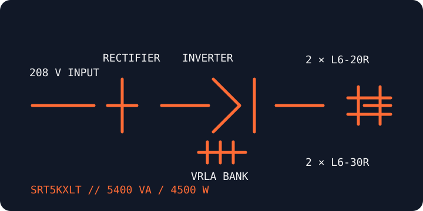

[ ONLINE DOUBLE-CONVERSION UPS // IDENTIFIED MODEL ]
Smart-UPS On-Line SRT5KXLT
A 208 V tower/rack UPS identified by Schneider Electric as 5.4 kVA / 4.5 kW. This is the North American SRT5KXLT SKU; do not substitute an international suffix or infer connector equivalence from the family name.

ARCHIVAL IDENTIFICATION: Record the complete model and serial/date code, input/output ratings, firmware, installed battery pack and management-card options before service or connection.
Exact model specifications
| Catalog category / topology | Online UPS — double-conversion online topology. |
|---|---|
| Electrical ratings | 5400 VA / 4500 W; nominal 208 V AC. Use the nameplate and manual for the permitted output configuration. |
| Transfer behavior | 0 ms inverter transfer in normal online operation; bypass transfer behavior is separate and must be taken from the applicable SRT 5K/6K manual. |
| Receptacles / connectors | Two NEMA L6-20R and two NEMA L6-30R output receptacles. Input connector and branch-circuit requirements must be verified against the unit label and installation guide. |
| Battery / runtime | Internal sealed lead-acid battery system with support for compatible external battery packs. Runtime depends on the load and battery condition; use Schneider Electric's model-specific runtime data rather than a generic estimate. |
| Communication | LCD status/control, USB and serial interfaces; SmartSlot network management card is an option. Confirm the installed card and host shutdown software. |
| Compatibility / safety | Connect only loads within the nameplate wattage, voltage and receptacle ratings. Match each load plug and circuit to the exact output receptacle; use qualified personnel for fixed wiring and follow the model manual, grounding requirements and battery safety instructions. |
Manufacturer references
- Schneider Electric — SRT5KXLT product recordManufacturer SKU page for product capacity, voltage and the model's NEMA output receptacles.
- Schneider Electric — SRT 5K/6K operation manualManufacturer operating and safety instructions for the SRT5K/6K models; confirm the model coverage and manual revision.